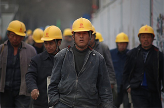
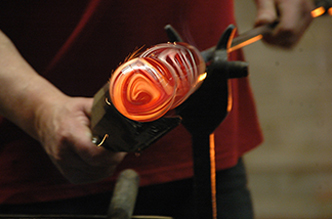

A. Bahaya Mekanik
Berasal dari mesin atau peralatan bergerak, seperti roda gigi, pisau pemotong, dan mesin produksi.
Risiko: terjepit, terpotong, tertarik mesin, dan cedera fisik.Kenali bahaya, lindungi diri, dan wujudkan lingkungan kerja industri yang aman dan sehat.
Pelajari K3Utamakan Keselamatan,
Wujudkan Lingkungan Kerja
yang Aman dan Sehat.
Keselamatan dan Kesehatan Kerja (K3) merupakan aspek penting dalam setiap kegiatan pekerjaan, khususnya di lingkungan industri. Penerapan K3 bertujuan untuk melindungi pekerja dari risiko kecelakaan, penyakit akibat kerja, serta menciptakan lingkungan kerja yang aman, sehat, dan produktif.
Melalui website ini, mari mengenal pentingnya K3, memahami berbagai potensi bahaya di tempat kerja, dan mempelajari cara mencegah kecelakaan kerja.
K3 adalah segala upaya untuk menjamin dan melindungi keselamatan serta kesehatan tenaga kerja melalui pencegahan kecelakaan kerja dan penyakit akibat kerja.
Dalam dunia industri, K3 diterapkan pada seluruh aktivitas pekerjaan, mulai dari pengoperasian mesin, penggunaan peralatan, pengangkutan barang, hingga pengelolaan bahan kimia.

Lingkungan industri memiliki berbagai potensi bahaya yang dapat mengancam keselamatan pekerja. Aktivitas seperti mengoperasikan mesin produksi, mengelas, mengangkat barang berat, dan menggunakan bahan kimia membutuhkan prosedur keselamatan yang tepat.
Waspadai sumber bahaya dan pahami risiko yang dapat ditimbulkannya.
Berasal dari mesin atau peralatan bergerak, seperti roda gigi, pisau pemotong, dan mesin produksi.
Risiko: terjepit, terpotong, tertarik mesin, dan cedera fisik.Berasal dari instalasi listrik, kabel rusak, atau penggunaan peralatan listrik yang tidak aman.
Risiko: tersengat listrik, luka bakar, dan kebakaran.Berasal dari bahan kimia berbahaya, gas, cairan, atau uap kimia.
Risiko: keracunan, iritasi kulit, gangguan pernapasan, dan luka bakar kimia.Berasal dari kondisi lingkungan kerja, seperti kebisingan, suhu ekstrem, getaran, radiasi, dan pencahayaan yang buruk.
Akibat posisi dan aktivitas kerja yang tidak sesuai dengan kondisi tubuh.
Risiko: nyeri punggung, cedera otot, dan gangguan persendian.Bahaya akibat bahan mudah terbakar, kebocoran gas, percikan api, atau instalasi yang tidak aman.
Alat Pelindung Diri (APD) merupakan perlengkapan yang digunakan pekerja untuk melindungi bagian tubuh dari potensi bahaya di lingkungan kerja.

Setiap pekerja wajib memahami prosedur keselamatan sebelum melakukan pekerjaan.
Kecelakaan kerja dapat dicegah melalui langkah yang konsisten.
Setiap lingkungan industri harus memiliki prosedur tanggap darurat.
Budaya K3 merupakan kebiasaan dan perilaku yang mengutamakan keselamatan dalam setiap aktivitas pekerjaan. Budaya K3 harus diterapkan oleh seluruh pihak, mulai dari pimpinan perusahaan, pengawas, hingga pekerja.
Keselamatan adalah tanggung jawab bersama.
Jangan mengabaikan prosedur keselamatan.
Gunakan APD sesuai ketentuan.
Laporkan setiap kondisi tidak aman.
Utamakan keselamatan daripada kecepatan pekerjaan.
Tidak ada pekerjaan yang lebih penting daripada keselamatan jiwa manusia. Dengan menerapkan prinsip K3 secara konsisten, kita dapat menciptakan lingkungan industri yang aman, sehat, nyaman, dan produktif.
Mari budayakan K3 mulai dari diri sendiri.Kembali ke atas